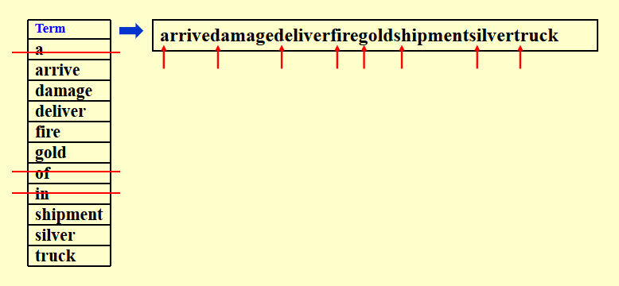
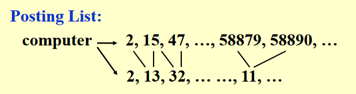
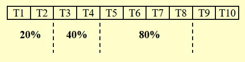
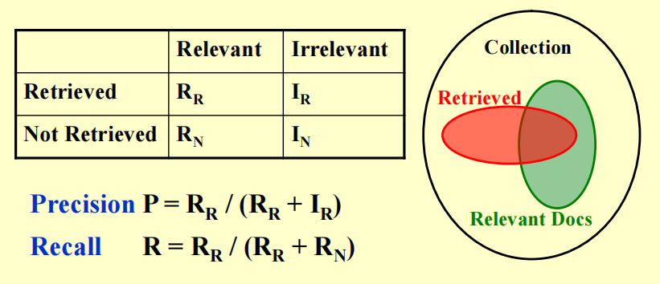
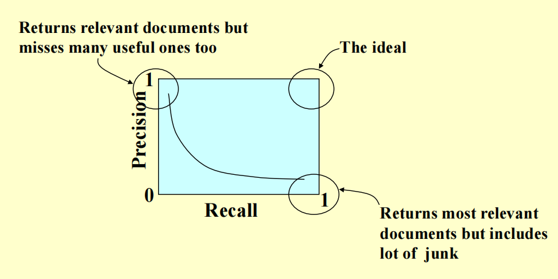

Lec 3: Inverted File Index⚓︎
约 3267 个字 26 行代码 预计阅读时间 17 分钟
注
下文提到的“文档”和“网页”是同义词，不要误会 ~
Concept⚓︎
引入
本节将会探讨相对轻松的话题：如何运用我们之前学过的数据结构，来实现搜索引擎的功能（这里只是简单介绍一下原理
Naive 的想法
字符串遍历 -> 在如今浩如烟海的网络世界中，这种显然方法无异于大海捞针 ...（耗时太长）
建立一张词汇 - 文档关联矩阵 (term-document incidence matrix)
假设现在有一份文档集：
我们为这 4 个文档内的所有词汇整理了一张词汇 - 文档关联矩阵：
可以看到，当某个单词出现在一个文档内，对应位置的矩阵元素的值为 1，否则为 0。因此，我们可以利用二进制来表示一个词汇的出现情况，比如a对应的二进制数为0111，表示除了第一个文档外的所有文档均出现了这个词汇。
我们也可以同时查找包含多个词汇的文档，比如我想要查同时包含silver和truck的文档，那么可以将它们对应的二进制数做一个按位与的操作，即1010 & 1011 = 1010，从而发现第 1 和第 3 份文档是符合要求的文档。
这个方法的缺点显而易见：矩阵过于稀疏 (sparse)，占用空间过多。
我们延续法 2 的思想，为文档中出现的所有词汇赋予一个「地址」而非一长串二进制数，从而节省了空间。而这个所谓的「地址」被称为索引(index)，对应的词汇 - 索引关联表被称为倒排索引(inverted file index)。对于法 2 出现的文档集，它对应的倒排索引是这样的：
我们关心表格的后两列信息：
- 前者收集所有文档中出现过的词汇，这块区域被称为词典(term dictionary)
- 后者记录了每个词汇对应的出现次数（或者说频率）以及出现位置（哪个文档 ; 文档中的具体位置（一篇文档内可能有多个位置
） ） ，这块区域被称为倒排列表(posting list)- 之所以要记录每个词汇出现的次数，是为了提升搜索的速度：对于一个包含多个关键词的搜索语句，搜索引擎优先搜索出现次数最少的网页，看这个网页是否包含其他所有的关键词，运用这种方式可以更快地排除不在搜索范围内的网页
- 举个例子：假设我要搜索同时带有
delivery、silver和truck的网页，如果先根据truck搜索，那么要判断 2 次才能找到符合要求的网页；而如果先根据次数较小的delivery搜索，那么只需判断 1 次就能找到了
- 举个例子：假设我要搜索同时带有
- 之所以要记录每个词汇出现的次数，是为了提升搜索的速度：对于一个包含多个关键词的搜索语句，搜索引擎优先搜索出现次数最少的网页，看这个网页是否包含其他所有的关键词，运用这种方式可以更快地排除不在搜索范围内的网页
- 所以搜索引擎返回给我们的内容不单单是一个个网页的链接，还会给出简短的网页信息，其中包含带有我们输入的搜索词（用高亮表示出来）的句子
关于「倒排」
我目前不太清楚为什么叫做「倒排」索引，这里引用修佬の解释：
所谓的倒排索引，所有的思想都凝结在了“倒”，也就是 inverted。如果可以，我觉得用“逆”更合适。这里的索引对象指的是“文档”和“单词”之间的关系，而倒排索引的意思是，对于每一个单词，我们记录它出现在哪些文档中，以及记录他们出现的次数（频率
） 。
下面给出一个简单的索引生成器的伪代码：
伪代码实现
伪代码中的每个高光部分分别对应以下搜索引擎的重要模块 (module)，之后我们会展开介绍：
- Token Analyzer & Stop Filter
- 词汇扫描器 (vocabulary scanner)
- 词汇插入器 (vocabulary insertor)
- 内存管理系统 (memeory management)
Modules⚓︎
Word Stemming⚓︎
在处理一个词汇的时候，先不急着把它放入倒序索引内，而是提取出它的词干部分，将这个词干保留下来，丢掉原来的词汇。
例子
在英语词汇中，一个单词可能有多种形式，但实际上它们的含义是一样的，因此为了节省空间，应该将这些形式各异但词干相同的词汇放在一起。
我们甚至可以将某个单词的常见错误拼写收集起来，进行词干的匹配。
Stop Words⚓︎
对于某些过于常见，几乎出现于每一个文本的词汇（比如英文里的冠词、代词等
注意
我们不会将停用词从倒排索引中踢掉——虽然在大部分情况下它们没什么意义可言，但还是存在一些特殊情况，比如英文单词 it，除了代词的意思外，还有可能指的是 IT（信息技术
Term Access⚓︎
我们通常会使用以下数据结构来存储倒排索引：
- 搜索树（尤指 B 类树（B- 树、B+ 树等
） 、字典树 (tries) 等） - 散列(hashing)：相较于前者，它有以下优缺点：
- 优点：查找单个词汇的速度非常快（\(O(1)\)）
- 缺点：查找多个词汇的速度相对较慢，因为多个词汇出现在散列表的位置是不确定的，有可能相距较远；而像字典树之类的搜索树，可能会将词汇按照联系程度的紧密来确定这些词汇的相对位置，因此查找在某个句子的一串词汇可能会更快一些
Memory Management⚓︎
对于之前给出的伪代码，我们将会做出一些调整，使得它能够处理内存不够用的情况（高亮部分为新增的伪代码
伪代码实现
BlockCnt = 0;
while (read a document D) {
while (read a term T in D) {
if (out of memory) {
Write BlockIndex[BlockCnt] to disk;
BlockCnt++;
FreeMemory;
}
if (Find(Dictionary, T) == false)
Insert(Dictionary, T);
Get T's posting list;
Insert a node to T's posting list;
}
}
for (i = 0; i < BlockCnt; i++)
Merge(InvertedIndex, BlockIndex[i]);
- 我们将填满的内存放入磁盘的一个存储块内，然后释放内存，继续用来装剩下的倒排索引
- 最后我们需要将这些装有倒排索引的存储块，以及内存里剩下的倒排索引合并在一起，合并的时候最好要排个序
Techniques⚓︎
Distributed Indexing⚓︎
由于互联网上的网页数量巨大，对应的倒排索引数据量也会特别大，因此我们不可能将所有的倒排索引放在一台计算机内——通常会放在多台计算机内，这些计算机合称为集群 (cluster)，其中的一台计算机被称为节点 (node)，每个节点会存储所有倒排索引的一个子集。那么关键问题在于我们该如何为倒序索引划分子集，下面有两种可行的方法：
- 法 1：按词汇划分索引（有点像字典）
- 法 2：按文档划分索引
Dynamic Indexing⚓︎
在实际应用中，可能会遇到以下问题：
- 文档可能会随时被添加进去：如果按照原来的方法，倒序索引就需要根据插入的文档来实时更新，这样的话效率太低了！
- 文档也有被删掉的可能
解决之道：
- 我们称原来存储索引的地方为主索引(main index)
- 现在新增一个存储少量索引的空间，叫做辅助索引(auxiliary index)（可以理解为一个 cache）
- 新插入的文档对应的索引会暂时存放在辅助索引内
- 如果要搜索网页的话，搜索引擎会同时在主索引和辅助索引内查找对应的索引，查找辅助索引的速度更快一些
- 在适当的时候将辅助索引内的内容合并到主索引内（即归档
） ，随后清空该索引，继续用于存放新插入的文档
疑难点
- 如何挑选合并两个索引块的最佳时间
- 如何从中删去一个文档
可惜的是，cy 的 PPT 并没有给出进一步的说明 ...
Compression⚓︎
这里有几种可压缩存储空间的场景：
-
关于词汇
- 一个简单的想法是将所有的词汇放在一个数组内，但是它的存储空间除了取决于词汇数量，可能还取决于最长词汇的位数，如果某个词汇很长，浪费的空间就特别多了
- 因此一种压缩的策略是：
- 先去除停用词
- 然后将所有的词汇放在同一个存储块内，词汇之间没有任何间隔，所以看起来就是一长串字符串
- 为了从这个长字符串中区分词汇，我们还需要另一张表来记录每个词汇的开头的位置
- 这样我们将一个很大的数组压缩成两张相对较小的表
例子
 -
关于索引
如果我们有大量的文档，那么词汇的倒排索引可能无法表示特别大的整数（即使long long int也救不了）- 因此我们不再记录文档的绝对序号，而是记录某个词汇所在的两个最近的文档的间距，也就是说记录基于绝对序号的差分 (difference) 序列。根据实际经验可知，大多数的间距值不会超过 20 bit，因而能够存储更大的文档序号
例子

Threshold⚓︎
设置阈值(threshold) 的原因是：让搜索引擎查找或检索所有相关的网页是没有必要的，因为我们人类的时间精力有限，即使搜出来的网页都有价值（而实际上只有很少的一部分网页是有意义的
- 文档：只检索根据权重排名下来的前 x 个文档
- 缺点：对于布尔查询（用到与、或等布尔运算
） ，可能会错过一些有意义的文档。比如我们要搜索Computer & Science，搜索引擎只会搜与这两者的交集相关的文档，可能会忽略与Computer相关或与Science相关的文档
- 缺点：对于布尔查询（用到与、或等布尔运算
-
查询(query)
- 将查询中的词汇按它们出现的频率升序排序
- 搜索的时候只会根据序列前面的几个词汇（也就是出现频率相对较少的词汇）搜索，因为通常而言出现频率少的词汇的价值高于出现频率多的词汇（换句话说，在倒排索引中，词汇对应的倒排列表的长度越长，它蕴含的意义可能更少）
- 根据实际情况确定阈值的大小：如果对于不同的阈值，搜索的准确度差不多，那么就取较小的阈值，否则取更大的阈值

Measurement⚓︎
我们可以从以下几个角度来测量搜索引擎的性能：
- 排索引的速度：每小时处理的文档数
- 搜索的速度
- 潜伏期 (latency)：等待搜索结果出现的时间
- 如果仅比较潜伏期是不太合理的，因为潜伏期的大小与索引的大小有关。因此将潜伏期看作关于索引大小的一个函数，在此基础上再做比较
- 查询语句的可表达性 (expressiveness)：即能够表达复杂信息的能力，我们会比较搜索引擎在这类复杂查询下的搜索速度
- 用户满意度：
- 数据检索性能评估 (data retrieval performance evaluation)：主要考虑响应时间、索引占用空间等指标
- 信息检索性能评估 (information retrieval performance evaluation)：主要考虑回答的相关程度等
相关性的测量还需要以下几部分：
- 一个作为基准文档集
- 一套作为基准的查询语句
-
一个对于每个查询 - 文档对的二维评估，如下图所示：
评估中会用到两个指标：精确度(precision) 和召回率(recall)
- 如果精确度高而找回率低，那么我们会错过很多有价值的网页
- 如果召回率高而精确度低，那么我们会得到很多无意义的网页
- 因此理想情况是同时具备较高的精确度和召回率，但实际应用中可能无法同时兼顾两者，需要做好权衡
评论区